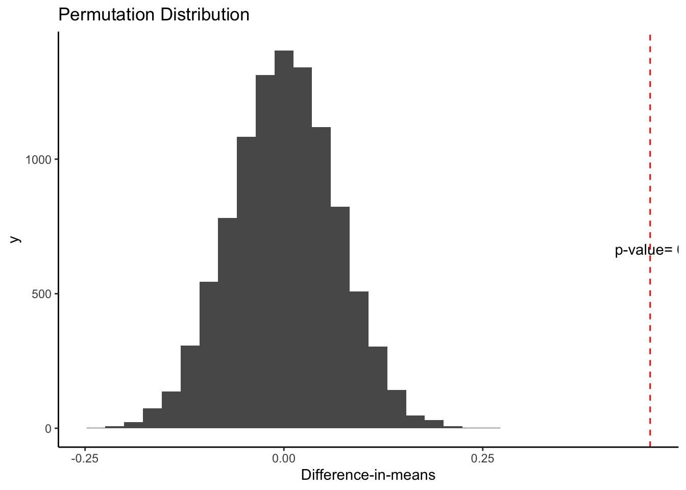
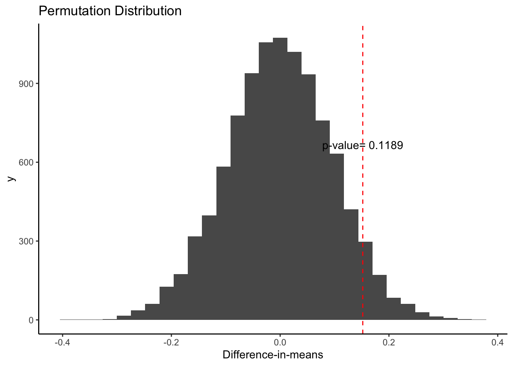
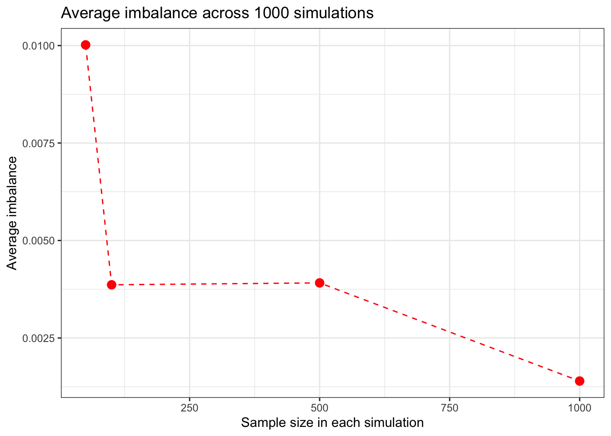
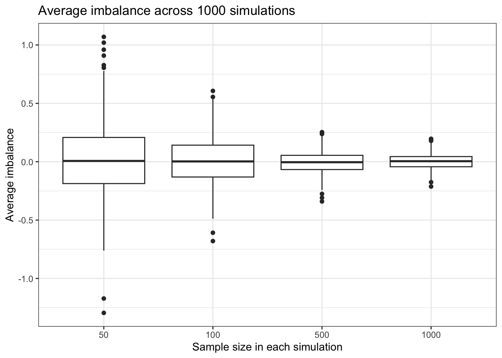

# Step 1: define your sample
# define a sample of N = 100 units and its treatment potential outcome (you could name the variable Y1) and its control potential outcome (you could name the variable Y0)
# let's imagine the control potential outcome is random noise, representing the many factors that explain the outcome in the control group. you could use the rnorm() or the runif() function to generate that "noise"
# you define how the treatment potential outcome differs from the control potential outcome
# use the data.frame() function to create a data frame from scratch.
Y0 <- rnorm(n=100)
Y1 <- Y0^2 + rnorm(n=100)
data <- data.frame(Y1, Y0)Practical 1: Random assignment
This exercise is inspired by similar problems by Graeme Blair, Chad Hazlett, and Erin Hartman.
Learning goals
- Understanding what a potential outcome is and how it is related to observed outcomes
- How to randomize treatment assignment
- How the estimand “average treatment effect” is constructed from potential outcomes
- How the estimator of the ATE, the difference-in-means, is calculated from data from an experiment
Potential outcomes
Treatment assignment
# assign treatment (add treatment variable to your population using mutate() and you can create the variable using the sample() function.)
# use ?sample to figure out how to use the function
# your treatment should be binary, so it should take on values 0 and 1
data <- data |>
dplyr::mutate(treatment =
sample(c(0,1),
size = 100,
replace = TRUE))Observed outcomes
# construct observed outcome (use the switching equation!)
# again use mutate() to add the observed outcome to your dataset
data <- data |>
dplyr::mutate(Y = ifelse(treatment == 1, Y1, Y0))Take a look at your data and make sure it has potential outcomes, a treatment indicator, and your outcome (four variables total)
head(data) Y1 Y0 treatment Y
1 1.4781859 0.4672368 0 0.4672368
2 1.6152356 -1.2633597 0 -1.2633597
3 0.9062952 -1.1434217 1 0.9062952
4 0.5204097 -0.8174559 0 -0.8174559
5 -0.4521506 -0.8520559 1 -0.4521506
6 -0.5911480 -0.3894827 0 -0.3894827Calculate your estimand
# calculate the estimand based on the potential outcomes
# using the summarize function
data |>
summarize(ATE = mean(Y1) - mean(Y0)) ATE
1 1.177071# it should give you the same result as
data |>
dplyr::mutate(tau = Y1 - Y0) |>
summarize(ATE = mean(tau)) ATE
1 1.177071Diff-in-means
# calculate your *estimate* of that estimand by coding up the difference-in-means estimator
# again you can use the summarize() command
data |>
summarize(ATEhat =
mean(Y[treatment==1]) -
mean(Y[treatment==0])) ATEhat
1 1.103193# it should give the same result as
lm(Y ~ treatment, data = data)
Call:
lm(formula = Y ~ treatment, data = data)
Coefficients:
(Intercept) treatment
-0.2056 1.1032 How close are your estimate and your estimand? What do you make of this?
# combine your estimate and your estimator into one summarize command, so two numbers are produced (ATE and d-i-m)
# i.e. data |> summarize(ATE = ?, dim = ?)
data |>
summarize(ATE = mean(Y1) - mean(Y0),
ATEhat = mean(Y[treatment==1]) -
mean(Y[treatment==0])) ATE ATEhat
1 1.177071 1.103193Can you write a function that repeats the process a few hundred times? Would you know to make inference with it?
Randomisation inference
Let’s write a function in R which takes as arguments the following: a vector of outcomes, Y ; an original treatment vector, D; and a number of iterates M.
The function should take the data, use the difference-in-means estimator on the actual data, and then run M iterates of randomization inference. For each iterate, randomize treatment assignment and calculate the difference-in-means under the sharp null assumption and the new treatment assignment.
Then it will produce a plot containing the following: i) A histogram or density plot of the randomization distribution of the difference-in-means estimates under the null; ii) A vertical line representing the original result in the actual data; iii) the two-tailed p-value for the observed difference in means statistic against the sharp null.
sharp_test <- function(Y, D, times) {
# Get the observed ATE
ate <- mean(Y[D == 1]) - mean(Y[D == 0])
# Permute the treatment, take permuted ATEs
perms <- tibble(ate_perm = replicate(n = times, {
D_perm <- sample(D, size = length(D), replace = FALSE)
mean(Y[D_perm == 1]) - mean(Y[D_perm == 0])
}))
# Obtain the p-value
right <- sum(perms$ate_perm >= abs(ate))/nrow(perms)
left <- sum(perms$ate_perm <= -abs(ate))/nrow(perms)
p.val <- (right + left)
# Make the plot
ggplot(perms, aes(x = ate_perm)) + geom_histogram() + geom_vline(xintercept = ate,
colour = "red", linetype = "dashed") + theme_classic() +
ggtitle("Permutation Distribution") + xlab("Difference-in-means") +
annotate("text", x = ate, y = times/15, label = paste("p-value=",
p.val)) }Now, let’s try the function
# Fake data 1
D1 <- rbinom(1000, size = 1, prob = 0.5)
Y1 <- rnorm(1000) + D1 * 0.5
sharp_test(Y1, D1, 10000)`stat_bin()` using `bins = 30`. Pick better value with `binwidth`.
# Fake data 2
D2 <- rbinom(1000, size = 1, prob = 0.1)
Y2 <- rnorm(1000)
sharp_test(Y2, D2, 10000)`stat_bin()` using `bins = 30`. Pick better value with `binwidth`.
Randomised designs
Let’s create a function that conducts complete random assignment
complete_ra <- function(data) {
dplyr::mutate(data, Z = sample(rep(c(0, 1), each = n()/2), n(), replace = FALSE))
}Now, let’s see how can we use it to simulate random assignment over several iterations
data <- tibble(
u = rnorm(100), # unobserved covariate
x = rnorm(100) # observed covariate
) |>
mutate(Y0 = x + u,
Y1 = Y0 + 5) |>
complete_ra() |>
mutate(Y = if_else(Z == 0, Y0, Y1))
estimatr::lm_robust(Y ~ Z, data = data) |>
broom::tidy() |>
filter(term == "Z") term estimate std.error statistic p.value conf.low conf.high df outcome
1 Z 4.818949 0.2837591 16.98254 5.917995e-31 4.255839 5.38206 98 YCan you put the code above in a loop (or replicate) to get the distribution of treatment effects across assignments?
We can also adapt the above code to estimate balance as follows:
data <- tibble(
u = rnorm(100), # unobserved covariate
x = rnorm(100) # observed covariate
) |>
mutate(Y0 = x + u,
Y1 = Y0 + 5) |>
complete_ra() |>
mutate(Y = if_else(Z == 0, Y0, Y1))
estimatr::lm_robust(x ~ Z, data = data) |>
broom::tidy() |>
filter(term == "Z") term estimate std.error statistic p.value conf.low conf.high df outcome
1 Z 0.1560937 0.1949875 0.8005317 0.4253392 -0.2308527 0.5430401 98 xNow, let’s turn our pipeline into a function so we can better re-use it
balance <- function(size = 100){
dat <- tibble(
u = rnorm(size), # unobserved covariate
x = rnorm(size) # observed covariate
) |>
mutate(Y0 = x + u,
Y1 = Y0 + 5) |>
complete_ra() |>
mutate(Y = if_else(Z == 0, Y0, Y1))
# Instead of regressing the outcome on the treatment indicator
# We regress the observed covariates on the treatment indicator
estimate <- estimatr::lm_robust(x ~ Z, data = dat) |>
broom::tidy() |>
dplyr::filter(term == "Z") |>
dplyr::select(estimate)
return(estimate)
}Now let’s simulate balance across realizations to check how does it behave
sim_times <- 1000
sim_balance <- tibble(sample = c(rep(50, sim_times),
rep(100, sim_times),
rep(500, sim_times),
rep(1000, sim_times)),
imbalance = NA)
set.seed(1234)
sim_balance[c(1:sim_times), "imbalance"] <-
map_df(.x = c(1:sim_times),
.f = ~balance(size = 50))
sim_balance[c(1001:2000), "imbalance"] <-
map_df(.x = c(1:sim_times),
.f = ~balance(size = 100))
sim_balance[c(2001:3000), "imbalance"] <-
map_df(.x = c(1:sim_times),
.f = ~balance(size = 500))
sim_balance[c(3001:4000), "imbalance"] <-
map_df(.x = c(1:sim_times),
.f = ~balance(size = 1000))
# Plot the results
sim_balance |>
group_by(sample) |>
summarize(imbalance = abs(mean(imbalance))) |>
ggplot(aes(x = sample, y = imbalance)) +
geom_line(color = "red", linetype = "dashed") +
geom_point(color = "red", size = 3) +
theme_bw() +
labs(title = "Average imbalance across 1000 simulations",
x = "Sample size in each simulation",
y = "Average imbalance")
But what about any given experiment? Can the imbalance be large despite randomisation?
sim_balance |>
ggplot(aes(x = factor(sample), y = imbalance)) +
geom_boxplot() +
theme_bw() +
labs(title = "Average imbalance across 1000 simulations",
x = "Sample size in each simulation",
y = "Average imbalance")